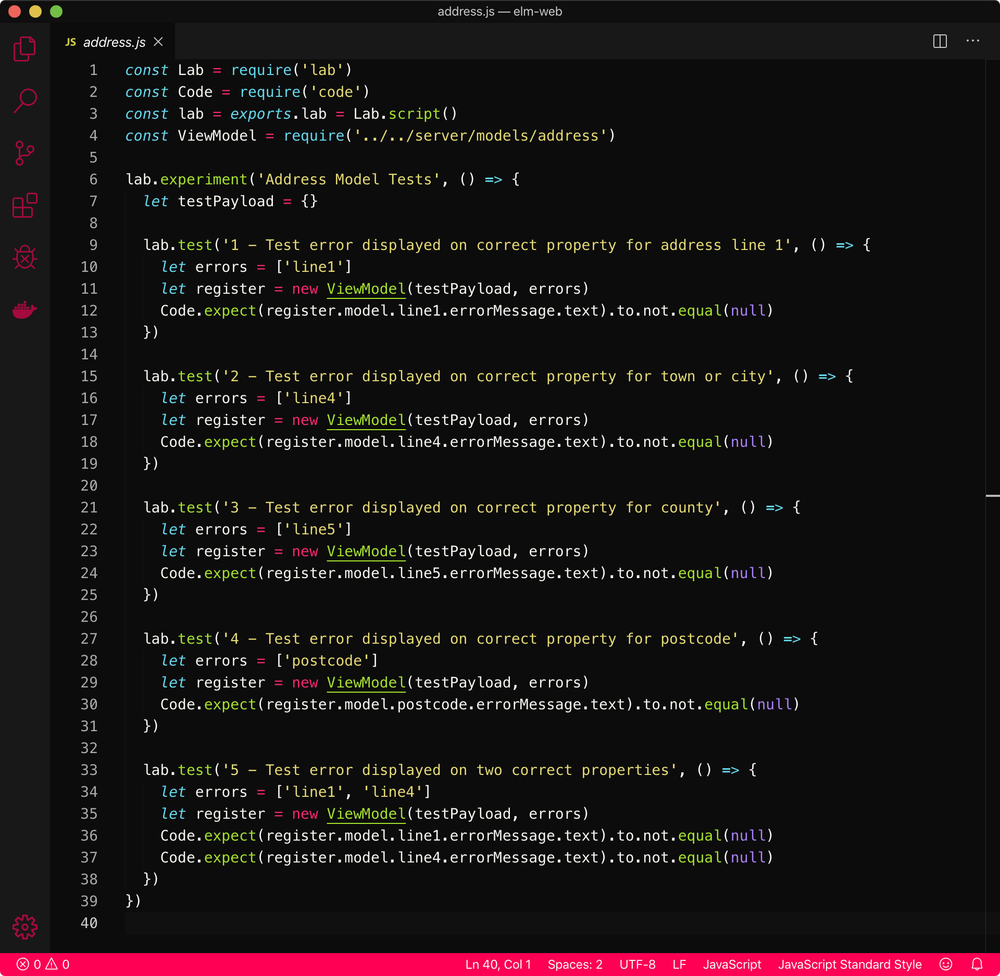

Environmental Land Management
BackSections
IntroductionSoftware Component Workshop
Software Component Analysis Artefacts
Component Prototyping
Error Handling
Unit Testing
Introduction
Environmental Land Management (ELM) is a new government scheme to cover the management of environmental resources in England. A large, agile team was set up to manage the development of the scheme, made up of a number of smaller teams. This covered all aspects of the scheme, like policy and resourcing, etc. When I returned from the Makers boot camp, I joined one of the smaller teams responsible for software development. This was a multi-disciplined team, with developers, business analysts, and user researchers. As the scheme was in the very early stages of development, I got involved in requirement analysis and design.
Software Component Workshop
The first major piece of work I was involved with was identifying what data needed to be stored, and what services would be required to deliver the scheme. This helped to inform on the number of teams required to develop the services, and therefore the number of sprints required, feeding the estimate for the overall length of the project.
To achieve this, I arranged a workshop to analyse the high-level user journey for participating in the ELM scheme, from initial application through to assessment and payment. This high-level user journey can be seen below (click images to enlarge them), each row representing a journey for a particular kind of user, and each post-it on each row representing the steps that they could want to take.

Alongside non-technical project team members, I looked at the physical steps a person would need to take, identifying the different systems they would likely need to interact with at each stage, and the data that would be captured. This was not just a case of identifying systems that needed to be developed, but also advising of what existing tools were available within the agency that could be repurposed to both save money and delivery time.
Software Component Analysis Artefacts
I grouped together data repositories and systems that were related, shown below; this helped to highlight gaps in the software journey where non-customer facing services would be required to help manage the flow of an application.

The output from this session was written up with more detail for presentation to project stakeholders, as shown below. Project leads could use this document to better inform on the direction the project was heading, and myself and fellow developers could use it to better prepare for what we were expected to develop.
Component Prototyping
Following on from identifying the required components, I was asked to work on prototyping a feature to capture address information. This feature would be used across a number of components, for users, agents, premises, bank details, etc., so it seemed a worthwhile feature to begin on.
As a public facing feature, the address form needed to meet Government Digital Service (GDS) standards. GDS publish a component library of html elements, built using Nunjucks, a JavaScript templating engine. These are used to implement a unified style across a service and offer some basic functionality.
Whilst developing the feature I noticed that the component I was using only presented a generic error message when there was an issue validating address information, as can be seen below.
I set about developing an error handling service so as to provide error messages corresponding to specific issues with address lines.
Error Handling
To better understand the problem, I first manually tested the original feature, intentionally creating errors on the page to assess the behaviour. I strategically placed breakpoints in the original code to identify at what point the errors were created for presentation on the page.
The address details entered in the form on the '/businessaddress' page (seen above) are passed to the POST route when the user clicks 'Continue'.
The POST route validates the form data against a Joi 'address' schema, shown below. Joi is a Node.js module that can be used to ensure properties of an Object conform to a specific format.
If the Joi schema returned an error, it was passed to the view model and the view model simply checked if there was an error passed to it, then set a property to true or false, using that property to trigger the presence on the error message on the view.
The Joi schema returned an Object with an error property. I output this Object to the console to better visualise the structure. The error property was a single String containing all errors found by the Joi schema. I created the 'split' function in the 'validation-errors.js' script, shown below, to take that String and break it into an Array of separate Strings.
I used the 'split' function in the POST route handler, shown below on line 24, passing in the error from the Joi schema.
To confirm that the 'split' function was returning an Array, I output to the console the result of a built in JavaScript function, 'isArray', passing in the 'errors' variable. Once confirmed I passed the 'errors' variable to the 'ViewModel' instantiation (seen above on line 26).
In the view model, I added conditional statements to check if the 'errors' Array was empty, then for each of the possible error types, shown below on lines 62, 72, 82, and 92. I output to the console a message relating to that error type then again intentionally created errors in the browser to see that each of the branches of the conditional statements were reached, and that the messages correlated to the error I had created.
Once I confirmed that the conditional statements were working correctly, I replaced the outputs to the console in the conditional statements with code to add, to the corresponding address line Object, an error property to say there was an error in that particular address line (seen above on lines 67, 77, 87, and 97).
The view, shown below, written using Nunjucks, uses a macro from the GDS toolkit to create the summary box. This macro takes an Array of Objects with properties 'text' and 'href'.
I changed the errors indicator in the view model from a Boolean to an Array and then, in each of the conditional statements, pushed Objects with properties 'text' and 'href' to the 'errors' Array. This meant the macro could receive the Object directly rather than creating an error message Object in the view using the errors indicator Boolean.
The end result can be seen below; each address line where an error has occurred displays a specific error message. This represents an improvement in the user experience, making it clearer what corrective action they need to take.
The 'validation-errors.js' script I wrote can be reused across any PSOT route where multiple form fields are validated against a Joi schema.
Unit Testing
This feature was unit tested during development to ensure the model produced the desired output when handling errors. There are unit tests for each of the conditions where an error could arise, along with a test for multiple errors occurring, as shown below.

Back